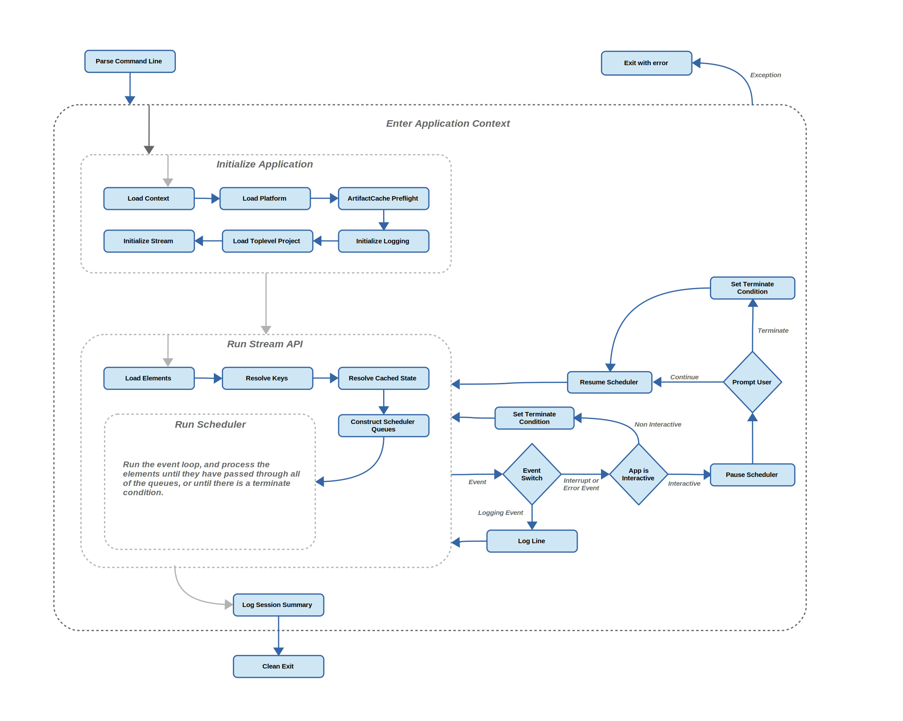

Overview of program flow¶
Here is a little chart to show the approximate highlevel program flow of BuildStream. This is in no way a complete flow chart of BuildStream, but should provide some highlevel insight into how the program operates in general.
